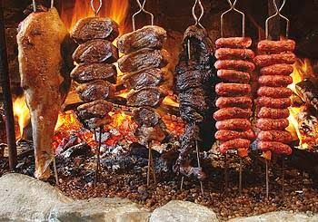
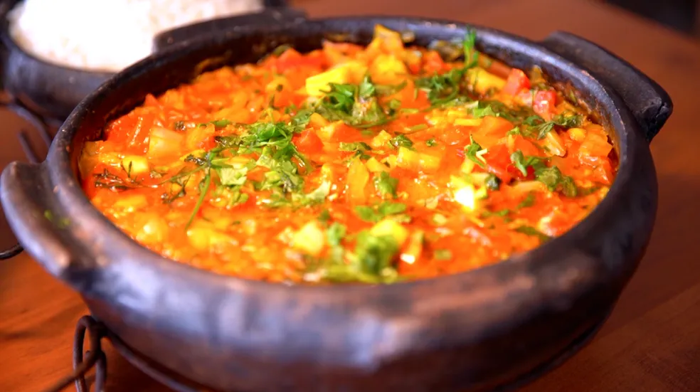

A culinária brasileira é um reflexo da rica mistura cultural do país, com fortes influências indígenas, africanas e europeias. Essa diversidade se manifesta em uma vasta gama de pratos e sabores que variam de acordo com a região.
Da Amazônia, no Norte, com seus peixes de rio, como o pato no tucupi, ao churrasco e ao barreado no Sul, cada canto do Brasil tem sua especialidade. O Nordeste encanta com a moqueca, o vatapá e o acarajé, de forte herança africana. O Sudeste, por sua vez, é a casa da feijoada e do pão de queijo.
Com ingredientes que vão da mandioca e do azeite de dendê até o café e a carne de sol, a gastronomia brasileira é uma jornada de sabores. Mais do que comida, é um patrimônio cultural que conta a história de um povo através do paladar.A culinária mineira é um verdadeiro tesouro da gastronomia brasileira, conhecida por seu sabor caseiro, farto e acolhedor. Com forte herança indígena, africana e portuguesa, utiliza ingredientes frescos e regionais, como milho, feijão, mandioca, carne de porco e queijo.
A culinária da região Sul do Brasil é um reflexo da forte influência de imigrantes europeus, especialmente italianos e alemães, misturada às tradições indígenas, espanholas e portuguesas. Ela é robusta e farta, ideal para as temperaturas mais frias da região.
A culinária do Norte reflete a rica biodiversidade da Amazônia. Com forte influência indígena, utiliza ingredientes como peixes de água doce, açaí, tucupi e mandioca. Pratos icônicos, como o tacacá e o pato no tucupi, destacam os sabores e saberes da floresta. É uma gastronomia autêntica que celebra a cultura e a natureza da região.
A culinária da Amazônia celebra a biodiversidade local e a herança indígena. Utiliza ingredientes frescos da floresta, como peixes de água doce, açaí, tucupi e mandioca. Pratos como o tacacá e o pato no tucupi refletem a riqueza e a cultura da região em sabores únicos.